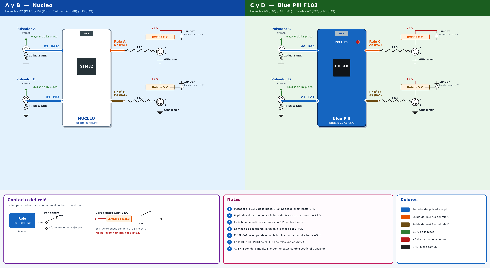
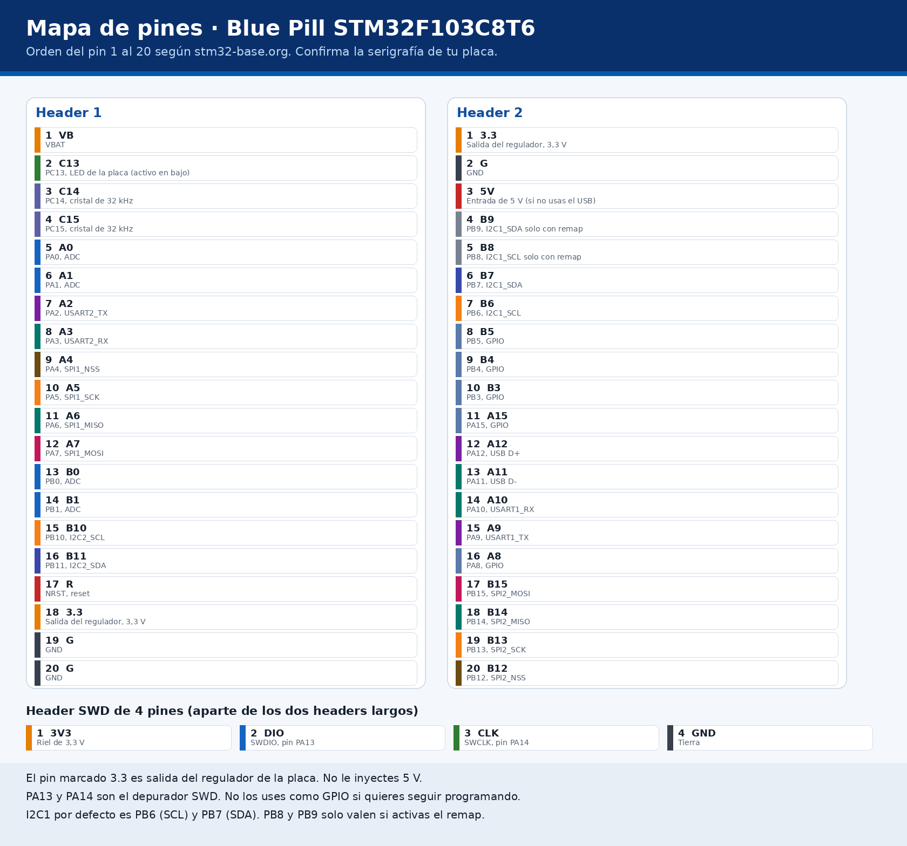
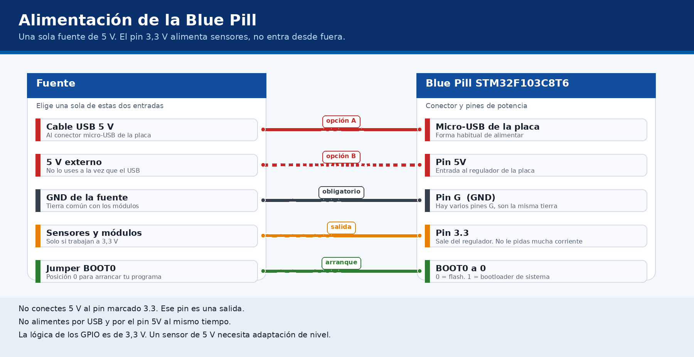
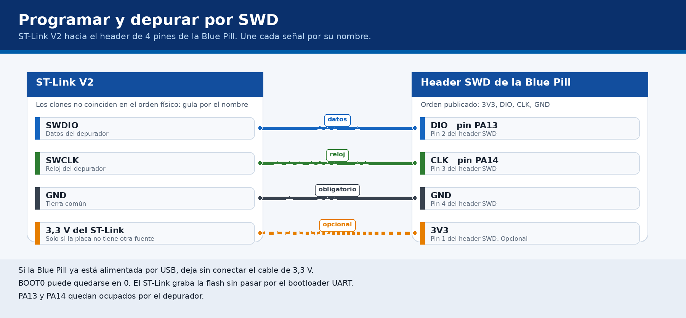
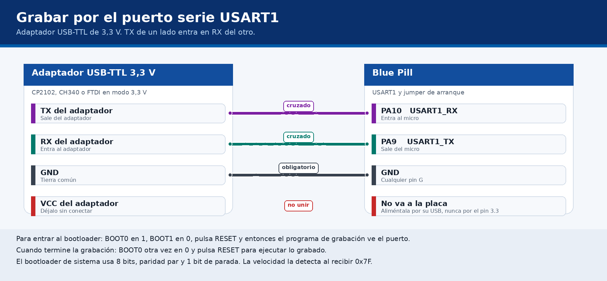
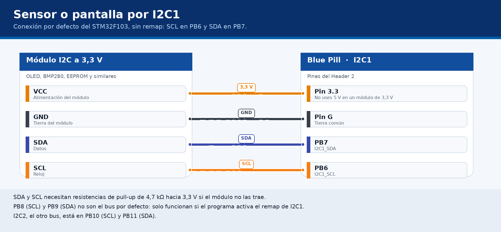
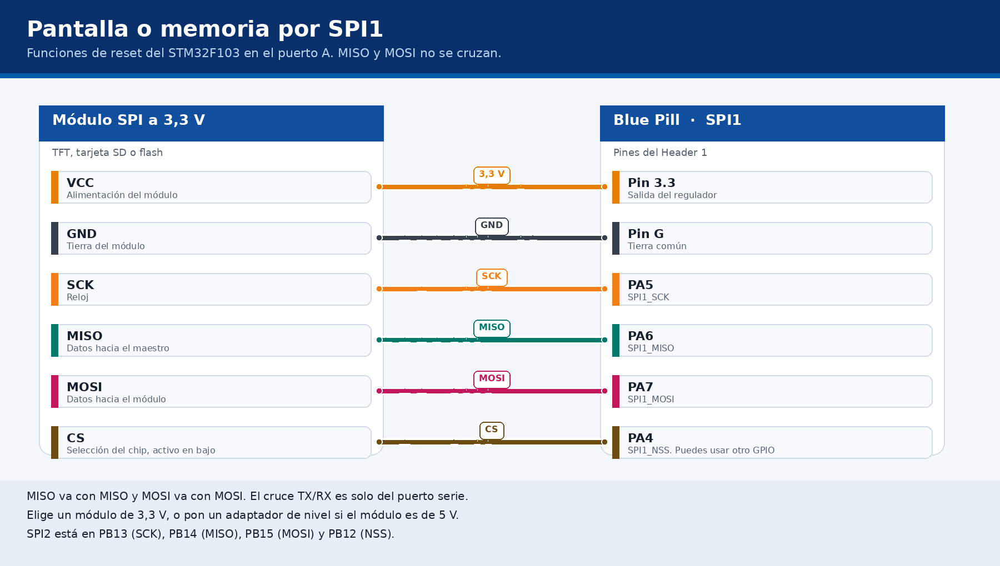

Nucleo: D2 y D4 entran, D7 y D8 salen. Blue Pill: A0 y A1 entran, A2 y A3 salen. En la Blue Pill, A0 es el pin 10 del chip.

Los dos headers de 20 pines y el header SWD de 4 pines.

USB o pin de 5 V, nunca los dos. El pin 3,3 V es una salida.

SWDIO a PA13, SWCLK a PA14 y GND. El cable de 3,3 V solo si la placa no tiene otra fuente.

TX del adaptador a PA10. RX del adaptador a PA9. BOOT0 en 1 y BOOT1 en 0 para grabar.

I2C1 por defecto: SCL en PB6 y SDA en PB7.

SPI1: SCK en PA5, MISO en PA6, MOSI en PA7 y CS en PA4.

Estas figuras son de la placa Blue Pill con el micro STM32F103C8T6. Una placa Nucleo ya trae el ST-Link en la misma tarjeta: ahí se programa por el USB marcado ST-LINK y estos cables no hacen falta. Si tu placa es otra referencia, los números de pin cambian.